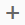
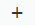
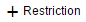

For creating static SQL analytic privileges, you use attribute columns from views to
define fixed restrictions on data access. These restrictions are defined in the analytic
privilege editor at design time.
Prerequisites
- If you want to use a SQL analytic privilege to apply data access restrictions on calculation
views, set the Apply Privileges property for the
calculation view to SQL Analytic Privileges.
- Open the calculation view in the view editor.
- Select the Semantics node.
- Choose the View Properties tab.
- In the Apply Privileges dropdown list, select
SQL Analytic Privileges.
- If you want to use a SQL analytic privilege to apply data access restrictions on CDS views,
you have defined the referenced CDS views using the WITH STRUCTURED
PRIVILEGE CHECK clause.
Procedure
-
Start the SAP Web IDE for SAP HANA in a browser.
-
If you want to create a new project for the calculation view, do the following:
-
In the SAP Web IDE for SAP HANA, choose .
-
Choose the project template type.
Currently, there is only one type of project template available,
namely: Multi-Target Application Project.
Select Multi-Target Application Project and
choose Next.
-
Type a name for the new MTA project (for example,
myApp and choose Next
to confirm.
-
Specify details of the new MTA project and choose
Next to confirm.
-
Create the new MTA project; choose Finish.
-
Select the HDB module in which you want to create the analytic privilege.
-
Browse to the src folder.
-
In the context menu, choose .
-
Enter details for the new analytic privilege.
-
In the Name field, enter the name of the
analytic privilege.
-
Choose Create.
The tool opens the analytic privilege editor where you can define the analytic
privilege.
-
Select models to define the scope of the analytic privilege.
If you want to create an analytic privilege and apply the data access restrictions for
selected list of models, in the Secured Models
section add the required models,
-
Choose .
-
In the Find Data Sources dialog, search and select the models for
which you want apply the analytic privilege restrictions.
Note You can only add calculation views and CDS views to the secured models list.
-
Choose OK.
-
Define validity.
In the Privilege Validity section, specify the time
period for which the analytic privilege is valid. You can specify more than one
time period for which the analytic privilege is valid.
-
Choose .
-
In the Operator dropdown list, select the
required operator.
-
Based on the selected operator, specify the time period (From and To) for the which the
analytic privilege is valid.
-
Define the attribute restrictions.
The tool uses the restrictions defined on the attributes to restrict data access. Each
attribute restriction is associated with only one attribute, but can contain
multiple value filters. You can define more than one attribute
restriction.
-
In the Assign Attribute Restrictions section,
choose .
-
In the Restriction Type dropdown list, choose
.
You can add more than one restriction for a single attribute.
-
Selected the required operator to define the condition.
-
In the Value field specify the required
value.
-
Define attribute restrictions using hierarchy node column.
You can define hierarchy analytic privileges only if you have enabled SQL access to shared
hierarchies.
For example, if you have enabled SQL access to shared
hierarchies and if SalesRepHierarchyNode is the node column
that modeler generates for a parent-child hierarchy, then
"SalesRepHierarchyNode" = "MAJESTIX" is a possible
filter expression in analytic privileges.
-
In the Hierarchy Privilege section, choose
.
-
In the Hierarchy dropdown list, select a hierarchy.
-
In the Value field, provide a node column
value.
Note You can create hierarchical analytic privileges only for the following conditions:
- All models in the Secured Models are
star join calculation views with shared dimensions.
- You have enabled SQL access to the shared hierarchies in
star join calculation views.
-
Build an HDB module.
The build process uses the design-time database artifacts to generate the
corresponding actual objects in the database catalog.
-
From the module context menu, choose Build.
-
Assign privileges to a user.
 File
File  New
New  .
.